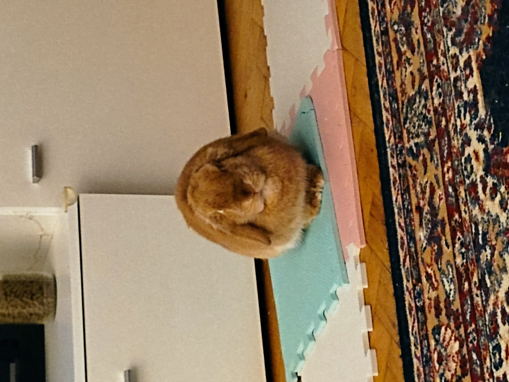

The TV Stand Escapade
Introduction
Oh, the things I have to put up with. Today, let's talk about my latest adventure: climbing on the TV stand. Spoiler alert: it wasn't as fun as it sounds.
The Temptation### 10:00 AM - The Shiny Box
There it was, the shiny box that humans are always staring at. It makes noises and shows moving pictures. Naturally, I had to investigate. Curiosity may have killed the cat, but it just annoys the bunny.
10:15 AM - The Climb
Getting up there wasn't easy. I had to hop onto the couch first, then make a daring leap to the TV stand. My little bunny legs were working overtime. Why do humans put these things so high up?

The Struggle### 10:20 AM - The Wobble
As soon as I landed, the TV stand started wobbling. Great, just what I needed. I tried to steady myself, but it felt like I was on a boat in a storm. Not my idea of fun.
10:25 AM - The Human Intervention
Of course, the humans noticed!. They started yelling and waving their arms. Like that's going to help. I was already regretting my decision, but now I had to deal with their overreaction too.
The Aftermath### 10:30 AM - The Rescue Mission
One of the humans finally came over and picked me up. Not gently!!, mind you. I was unceremoniously plopped back onto the floor. The indignity of it all.

10:35 AM - The Lecture
Then came the lecture. "Bunnies don't belong on the TV stand," they said. "You could get hurt," they said. Yeah, yeah, I've heard it all before. Maybe if they didn't make it so interesting, I wouldn't be tempted.
Conclusion
So, there you have it. My ill-fated attempt to conquer the TV stand. Was it worth it? Absolutely not. Will I try it again? Probably. Because I'm a bunny, and that's what we do.
Grumpily yours,
The Grumpy Bunny